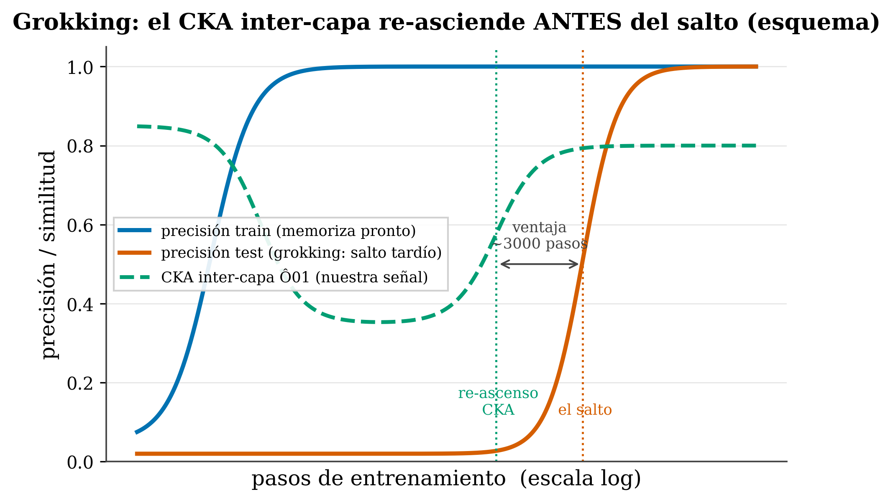

25 Training dynamics and grokking
Where we are. We close Part III with the most baffling phenomenon in training: a model that memorizes fast, then sits stuck without generalizing for an extraordinarily long time… and then, much later, generalizes all at once. That’s grokking. We explain it from scratch, lay out what science has discovered about why it happens, and present —with its honest scope— a pilot result of ours: an internal, cheap signal that lights up before the jump.
25.1 The idea in one sentence
Sometimes a network’s understanding doesn’t arrive when it stops making mistakes during training, but much later: the circuit that truly generalizes forms quietly beneath the surface, and the “jump” we see is just the moment when it finally outweighs memorization.
25.2 Key concepts and their role in the transformer
Before getting into the details, we define this chapter’s terms and what each one is for inside a transformer:
- Grokking. Definition: the pattern in which a network memorizes fast (train→100%, test at chance), goes through a long plateau, and then generalizes all at once. In the transformer: the training phenomenon the whole chapter studies, visible as two widely separated sigmoids.
- Memorization vs. generalization. Definition: storing the answers it has seen without useful structure, versus learning the pattern that solves new cases. In the transformer: the two solutions that compete during training; the “jump” is when the second finally wins.
- Fourier algorithm. Definition: the mechanism Nanda found in modular addition —placing numbers as angles and turning “adding” into “rotating”. In the transformer: the circuit that truly generalizes, and which forms gradually beneath the plateau.
- Progress measure. Definition: a continuous quantity measurable at every step (e.g. how much of the representation concentrates in a few frequencies). In the transformer: it lets you see that the generalizing circuit grows before the visible jump.
- The LU mechanism and weight decay. Definition: the train loss has an “L” shape (many solutions memorize) and the test loss a “U” shape (only a band of small norm generalizes); weight decay penalizes large weights and drags toward there. In the transformer: the engine that pushes from the memorizing solution to the generalizing one; without it, many models never grok.
- Order parameter. Definition: the “thermometer” that betrays a phase transition —a quantity that changes qualitatively when it crosses the threshold. In the transformer: the framework with which the frontier (2024-2026) reads grokking as a phase transition.
- Inter-layer CKA \(\hat{O}_{01}\). Definition: Centered Kernel Alignment, a number in [0,1] that measures how alike the representations of layer 0 and layer 1 are. In the transformer: our pilot signal —it drops during memorization and re-rises before the jump.
- Predictive vs. causal. Definition: a signal that anticipates an event versus a lever that causes it. In the transformer: the CKA re-rise turned out to be predictive, not causal —forcing it does not manufacture grokking.
The underlying idea: grokking is not magical on the inside; something measurable forms slowly, and learning to read it lets you anticipate the jump (even if you can’t trigger it).
25.3 What grokking is
The term was coined by Power and colleagues in 2022 (Power et al. 2022) while studying small algorithmic tasks —the canonical example is addition or multiplication modulo a prime \(p\) (arithmetic on a clock with \(p\) hours). They trained a small transformer and observed a curve that breaks classical intuition:
- Memorization phase (early). In a few steps, accuracy on the training set rises to ~100%. The model has learned the answers by heart. Accuracy on test (unseen examples) stays at chance.
- Long plateau. For an enormously long stretch —often a thousand times more steps than it took to memorize— nothing seems to change: train pinned at 100%, test on the floor. By the classical logic of overfitting, this is where we should stop: the model “is already done” and is only memorizing.
- The jump (grok). And then, with no warning, accuracy on test shoots up to nearly 100%. The model generalizes —it “clicks”— long after it stopped improving on training. Hence the name: to grok is to understand something deeply and suddenly.
The visual signature is two widely separated sigmoids over a step axis on a logarithmic scale: the train curve rises early, the test curve rises extremely late (Figure 25.1, blue and orange curves). Power also noticed that the smaller the dataset, the disproportionately more optimization needed for the jump to arrive.
🧩 Analogy — the student who crams. A pupil memorizes the multiplication tables by repetition. For weeks they rattle off the ones they’ve seen (high “training” accuracy), but fail the moment you give them a new problem (test at chance). One day the underlying pattern clicks and suddenly they can solve any case, seen before or not. The interesting part: the understanding was being built silently all that time; the “aha!” is just the instant when it finally beats the habit of reciting.
25.4 Underneath it isn’t so sudden: the algorithm that forms slowly
The jump looks magical, but Nanda and colleagues (Nanda et al. 2023) took it apart piece by piece with mechanistic interpretability (opening the network and reading what it actually computes). In modular addition, they found that the model learns a concrete Fourier algorithm: it places each number as an angle on a circle and turns “adding” into “rotating”, using trigonometric identities. Adding \(a+b \bmod p\) becomes composing two rotations.
What’s decisive for understanding grokking is how that algorithm appears. Nanda defined progress measures —continuous quantities you can watch at every step, like how much of the representation is concentrated in a few Fourier frequencies— and saw that the generalizing circuit forms gradually, long before the visible jump. Training splits into three stages:
- Memorization: the network stores the answers it has seen without useful structure.
- Circuit formation: in parallel, and slowly, the Fourier mechanism that does generalize is built.
- Cleanup: once the good circuit works, the pure-memorization components are removed.
The moral, important and counterintuitive: grokking isn’t really sudden on the inside. The structure that generalizes is amplified bit by bit; the abruptness we see in the test curve is an artifact of the moment when that circuit —which had been cooking for a while— finally dominates and memorization retreats. That’s why it makes sense to look for early signals: if something is forming gradually beneath the surface, it should be possible to measure it before it surfaces.
25.5 Why it happens: the loss landscape and weight decay
What pushes the network from the memorizing region to the generalizing one? The sharpest answer came from Liu, Michaud, and Tegmark in Omnigrok (Liu et al. 2022), looking at the loss landscape as a function of the weight norm (how “large” the parameters are overall):
- The training loss, seen against the norm, has an “L” shape: it drops early and stays low across a wide range of norms (many solutions memorize well).
- The test loss has a “U” shape: it is only low in a narrow band of small norm —that’s where the solution that truly generalizes lives.
They call this the LU mechanism. The practical key is weight decay (the regularization that penalizes large weights; we saw it in Ch. 11): it pushes the norm down slowly, dragging the weights from the memorizing zone (high norm) toward the generalizing minimum (low norm). Grokking appears precisely when that drag completes the journey. It fits Nanda’s “cleanup”: regularization removes the high-norm solution once a low-norm general circuit exists. Without enough weight decay, many models never generalize —they stay on the plateau forever.
25.6 How the frontier is looking at it (2024-2026): everyone with their own “thermometer”
Grokking has become a laboratory for phase transitions in networks (it connects directly with our Part III: an abrupt qualitative change governed by an order parameter, the “thermometer” that betrays the transition). Three recent works propose different order parameters:
- Spectral entropy collapse (Khanh et al. 2026): the order parameter is the spectral entropy of the covariance matrix of the representations —how “spread out” information is across directions. It collapses on crossing a threshold before test rises; the authors frame it explicitly as a predictive framework and tie it to Fourier-aligned representations.
- Dimensional transition (Wang 2026): the parameter is the effective dimensionality of the gradient dynamics, which crosses from a sub-diffusive to a super-diffusive regime at the onset of generalization (self-organized criticality).
- Commutator defect (Xu 2026): it measures the curvature that makes gradient updates fail to commute with one another; that signal rises before the jump, and forcing that non-commutativity accelerates grokking.
25.7 Our pilot result: the re-rise of the inter-layer CKA
Here is our contribution, and we present it with its exact scope —it is a pilot study, not a settled law.
We measured, step by step during training, the inter-layer CKA: the representational similarity between what layer 0 computes and what layer 1 computes.
CKA (Centered Kernel Alignment) is a number between 0 and 1 that answers “how alike are two sets of representations?”. 1 = practically the same structure; 0 = nothing in common. We apply it between two layers of the same model (layer 0 vs layer 1), hence “inter-layer”. We call it \(\hat{O}_{01}\).
The pattern we observe in models that do end up grokking:
- \(\hat{O}_{01}\) starts high (at the start, the layers do similar things).
- It drops during memorization (the layers specialize in memorizing, each on its own thing).
- And then it re-rises —rises again— about ~3000 steps before test accuracy makes the jump (Figure 25.1, green curve).

figures/make_fig24_grokking.py.
That early re-rise is the signal: when \(\hat{O}_{01}\) starts growing again, the generalization jump is on its way. In our pilot, the signal appears in 16 of 16 models that grok and in 0 of 5 that don’t, and it replicates on modular addition with several primes and on modular multiplication. The \(k\)-sparse parity task marks the edge of the phenomenon: there inter-layer coordination works differently and the signal blurs, which bounds its scope to Fourier-type tasks where generalization requires the layers to coordinate.
It fits Nanda’s story: if the generalizing circuit assembles gradually and needs two layers working together, their representational similarity should recover while it’s being assembled —before the result surfaces in test.
Two cautions we don’t skip:
- “Predicting grokking” is NOT a new idea of ours. There is already work dedicated to it —one is literally titled Early-Warning Signals of Grokking (Xu 2026), and the spectral-entropy one (Khanh et al. 2026) also predicts the time to the jump. Our contribution is not “being the first to predict”, but a concrete, simple signal internal to training (the inter-layer CKA) that is cheap to measure, is between layers (not covariance within one), and gives a measurable time advantage.
- It’s a pilot, not a law. A single study is weaker evidence than the multi-seed works in the literature. We still need to validate the time advantage and the robustness across seeds with the same rigor they use. And CKA is a linear proxy for similarity: useful, but not the last word. The nearest neighbor to cite is the spectral-entropy collapse, which also touches the geometry of the representations.
25.8 The result where we refute ourselves
This is honesty demonstrated, not announced (Ch. 0). On seeing that CKA re-rises before the jump, a tempting hypothesis arose: if inter-layer coordination causes generalization, then forcing \(\hat{O}_{01} \to 1\) (forcing the layers to resemble each other) should cause —or at least not prevent— grokking… and perhaps the opposite, preventing it, would prove the signal is a causal lever.
We tested it. And the experiment refuted us: when training for 20,000 steps, 2 out of 3 models with forced CKA kept grokking all the same. The honest conclusion:
The re-rise of the inter-layer CKA is a predictive / correlational signal, not a causal lever you can pull to manufacture (or block) generalization.
We corrected our own claim: it went from “candidate causal signal” to “early predictor, with no causality demonstrated”. It’s exactly the kind of recipe the manual preaches —follow the data even when it knocks down your favorite hypothesis.
tafagent doesn’t train models, but it includes an induction-head phase detector (the training-dynamics recipe, based on \(\Delta\gamma\)): it tells you whether a model has already crossed the transition in which copy/induction circuits form —the “inference-side” relative of the circuit formation we see here during training. Useful for placing a model relative to that phase transition without having to retrain it.
25.9 Summary
- Grokking (Power et al. 2022): on algorithmic tasks, the network memorizes early (train→100%, test at chance), goes through a long plateau, and generalizes all at once much later.
- It isn’t sudden on the inside (Nanda et al. 2023): it learns a Fourier algorithm that forms gradually (memorization → circuit formation → cleanup); the abruptness is an artifact of when the good circuit wins.
- Why (Liu et al. 2022): the loss landscape against the weight norm (“LU” mechanism) + weight decay drag from the memorizing solution (high norm) to the generalizing one (low norm).
- Frontier 2024-2026: phase transitions with different order parameters —spectral entropy, effective dimension, commutator defect—; two of them already predict the jump.
- Our pilot (Marín 2026): the inter-layer CKA \(\hat{O}_{01}\) drops and re-rises ~3000 steps before the jump (16/16 vs 0/5; scope = Fourier-type tasks). Honest: predicting is not new; ours is a simple, internal and cheap signal, and it’s a pilot still to be validated.
- We refute ourselves: forcing CKA→1 does not prevent grokking (2/3 at 20k steps) → a predictive signal, not causal.
Next: with this we close Part III —the physical lens on attention. Part IV opens the practical side: training and tuning models (pre-training, fine-tuning, LoRA/PEFT, alignment), where all this dynamics stops being a curiosity and becomes an engineering decision.
25.10 Exercises
- The curve. Describe the three phases of grokking in terms of train and test accuracy. Why would the classical logic of overfitting tell you to stop before the jump arrives?
- Not so sudden. According to Nanda, what is forming during the plateau, and why does the test jump look sudden even though the mechanism isn’t?
- The engine. Explain Omnigrok’s “LU” mechanism and the role of weight decay. What happens if weight decay is insufficient?
- Honesty I. Why do we not claim to have been the first to predict grokking? What, then, does our contribution consist of?
- Honesty II. We had the hypothesis that CKA was a causal lever. What experiment put it to the test, what came out, and how did it change our claim?
The full pilot study —with the data, the seeds, the tasks (modular addition/multiplication, \(k\)-sparse parity) and the refutation experiment on forcing CKA— is deposited openly: Inter-Layer Alignment Re-Rise Predicts Grokking in Transformers: A Pilot Study (Zenodo).